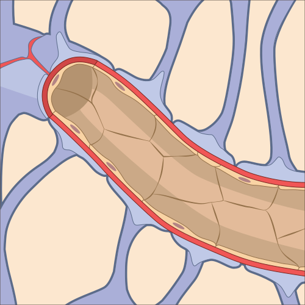

Why can't most drugs reach your brain?
You can swallow a pill and it travels through your whole body. But your brain is walled off from your blood, and most medicines never get in. Here is the barrier that does it, and why it is the hardest problem in brain medicine.

Over a hundred years ago, the German physician Paul Ehrlich noticed something strange. He injected a blue dye into the bloodstream of an animal, and within minutes nearly every organ in the body had turned blue. Every organ except one. The brain and spinal cord stayed pale, as if the dye had been turned away at the door.
Years later one of his students, Edwin Goldmann, ran the experiment in reverse. He injected the same kind of dye directly into the fluid around the brain, and this time only the brain and spinal cord soaked it up while the rest of the body stayed clear. Two experiments, one conclusion. Something sits between the blood and the brain and keeps the two worlds separate. We call it the blood-brain barrier, and it is the reason your brain is both the best protected organ you have and the hardest one to treat.
Why your brain needs a wall
Start with the problem the barrier solves. Neurons do their work with electricity, and that electricity runs on tiny differences in the concentration of charged particles like sodium, potassium, and calcium across their membranes. The whole system is finely tuned. A small shift in the balance of those ions can make neurons fire when they should be quiet, or fall silent when they should fire.
Now think about what your blood is actually like. It is a churning, changing soup. It spikes with sugar after a meal, fills with hormones when you are stressed, carries the byproducts of everything you eat and drink, and now and then picks up a toxin or a stray molecule that has no business near a neuron. Most of your organs can ride out those swings. Your brain cannot. It needs a stable, tightly controlled chemical bath, hour after hour, for your entire life. The blood-brain barrier is how it gets one.
The barrier is the blood vessel
Here is the part that surprises people. The blood-brain barrier is not a membrane wrapped around the outside of the brain. It is built into the brain's own blood vessels, all the way down at the level of the tiniest capillaries that thread between your neurons.
Everywhere else in your body, the capillaries are a little leaky on purpose. The cells that line them, called endothelial cells, have small gaps between them that let fluid, nutrients, and immune cells pass back and forth into the surrounding tissue. In the brain, those same lining cells are stitched together edge to edge by structures called tight junctions, built from proteins like claudin-5 and occludin. The gaps are sealed. Nothing slips between the cells. To get from the blood into the brain, a molecule cannot go around the lining cells. It has to go straight through them, and that is where the real gatekeeping happens.
The lining cells do not work alone. Wrapped around the outside of each brain capillary are the endfeet of astrocytes, the star shaped support cells that help build and maintain the barrier, along with cells called pericytes tucked into the vessel wall. Together this team is sometimes called the neurovascular unit. The astrocytes are part of why brain blood vessels seal up the way they do and ordinary blood vessels do not.
What gets in, and how
A sealed wall would be useless if nothing could cross it, because the brain still needs fuel and raw materials. So the barrier is not really a wall. It is a very selective gate, with a few specific ways through.
The first way is to be small and fat soluble. Molecules that dissolve easily in oil can slip directly through the fatty membranes of the lining cells without needing a door. Oxygen and carbon dioxide cross this way, which is essential. So do a handful of recreational molecules, which is no accident. Alcohol, nicotine, and caffeine are all small and fat soluble, which is exactly why they reach your brain quickly and change how you feel.
The second way is to carry a ticket. The brain runs almost entirely on glucose, and glucose is not fat soluble, so it cannot drift through on its own. Instead the lining cells are studded with specific transporter proteins, like a glucose transporter called GLUT1, that grab the molecule on the blood side and hand it across to the brain side. There are dedicated transporters for glucose, for certain amino acids, and for other essentials. The barrier ships in what the brain needs and ignores almost everything else.
And there is a third feature that is easy to miss. The lining cells also run pumps that actively throw molecules back out. The best known is P-glycoprotein, which grabs a wide range of foreign compounds that manage to get partway in and ejects them back into the blood before they reach the brain. So the barrier is not only passive sealing. It is actively bouncing things at the door.
Why this makes medicine so hard
Now the consequence. The same barrier that protects your brain from toxins cannot tell the difference between a toxin and a drug you actually want delivered. To the barrier, a carefully designed medicine is just another foreign molecule to keep out.
The numbers are stark. By one widely cited estimate, close to 98 percent of all small-molecule drugs cannot cross the blood-brain barrier in useful amounts, and essentially all large-molecule drugs, the antibodies and proteins that have transformed the rest of medicine, cannot cross at all. This is the central bottleneck in treating brain disease. There are promising compounds for conditions like Alzheimer's and brain tumors that simply cannot get to where they are needed.
The clever workarounds tell you a lot about how the barrier thinks. Parkinson's disease comes from a loss of dopamine in the brain, but you cannot treat it by giving dopamine, because dopamine cannot cross the barrier. The trick is to give a molecule called L-DOPA instead. L-DOPA is the chemical the body uses to make dopamine, and crucially it looks enough like an amino acid that one of the barrier's transporters carries it across. Once inside, the brain converts it into dopamine. The drug does not break through the barrier. It sneaks through a door that was built for something else.
You have probably felt the barrier at work yourself. Older antihistamines like diphenhydramine cross into the brain easily, which is why they make you drowsy. Newer ones were deliberately designed to be poor at crossing, so they fight your allergies without putting you to sleep. Same job, different relationship with the same barrier.
Your brain is not protected by a wall around it. It is protected by the walls of its own blood vessels.
When the barrier breaks
The barrier is not unbreakable, and when it fails it matters. Inflammation, stroke, multiple sclerosis, infection, and tumors can all loosen those tight junctions and make the once sealed vessels leaky. That is a problem, because it lets in immune cells and molecules the brain is supposed to be shielded from, and it can drive further damage and swelling.
But a leaky barrier is also a strange kind of opportunity. Researchers are working on ways to open the barrier briefly and on purpose, in just one small spot, to slip drugs through. One approach uses focused ultrasound together with tiny injected bubbles to nudge the junctions open for a short window over a tumor. Others are designing drugs to ride the barrier's own transporters, a Trojan horse strategy that disguises a medicine as something the gate already lets through. The same barrier that has blocked brain medicine for a century is slowly being turned into a door.
Why it matters
The blood-brain barrier is one of those ideas that quietly reorganizes how you see the brain. It explains why a cup of coffee reaches you in minutes but a brilliant cancer drug cannot reach a tumor a few centimeters away. It explains why some pills make you sleepy and others do not. It explains why your brain stays so calm and stable while the rest of your body weathers every meal and stress and infection you throw at it.
It is also a reminder that protection and access are always a tradeoff. The brain bought its remarkable stability by walling itself off, and we are still, more than a century after Ehrlich's blue dye, learning how to knock politely at the door.